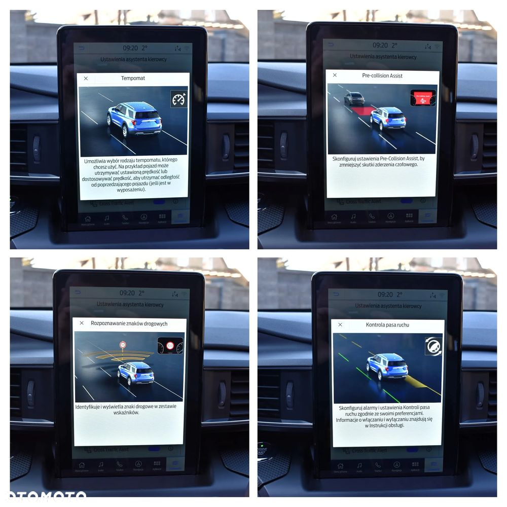
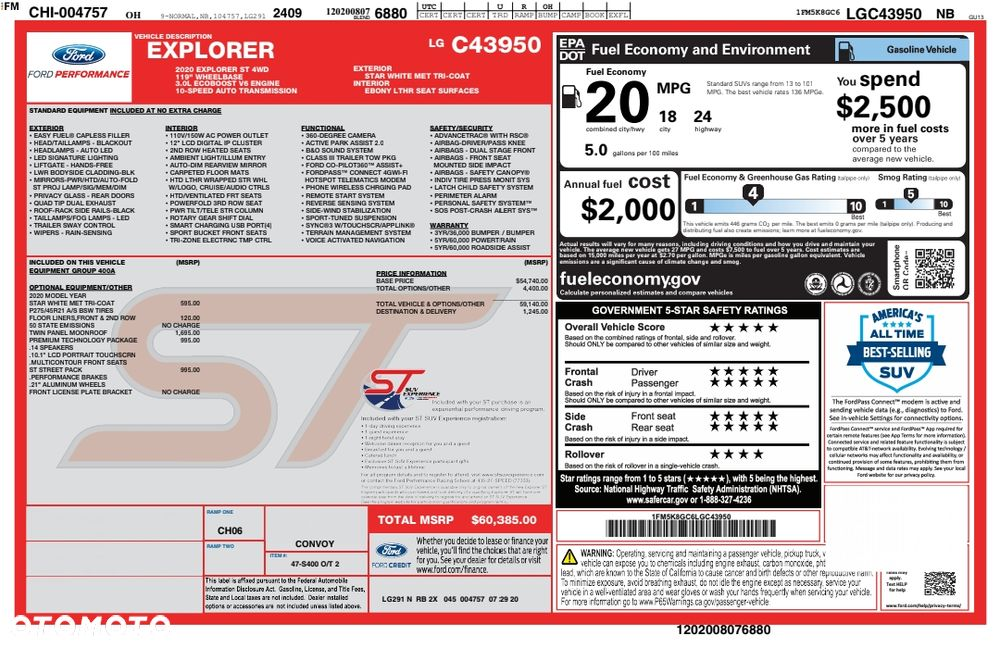
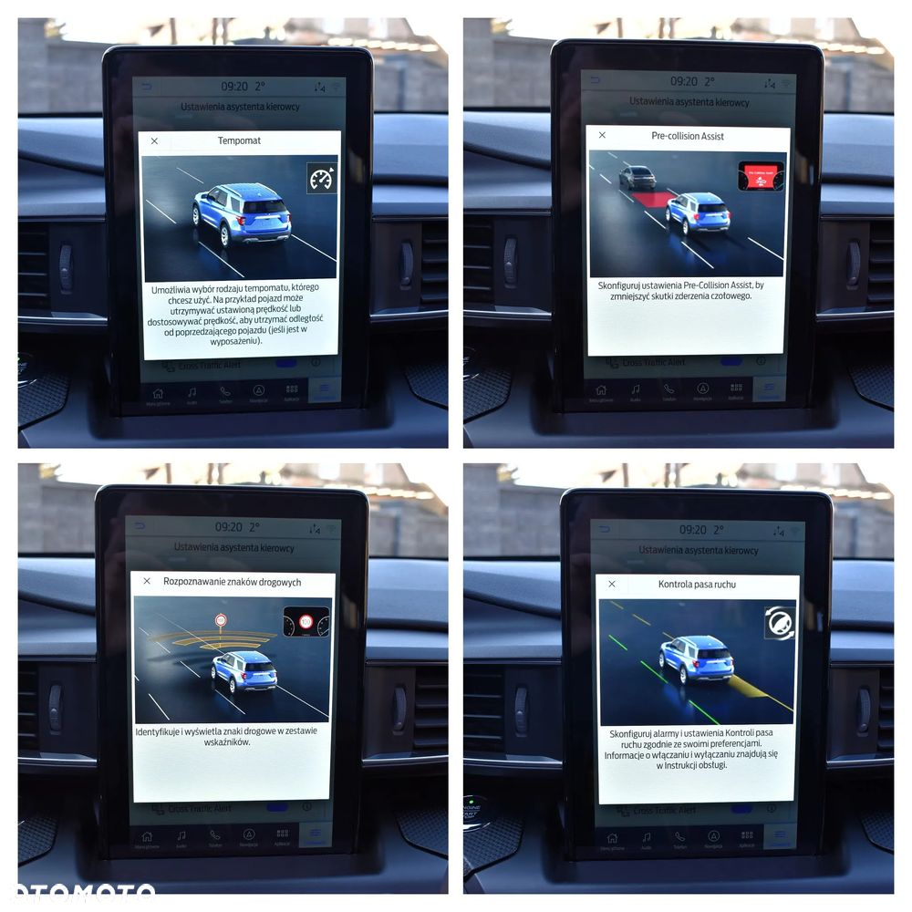
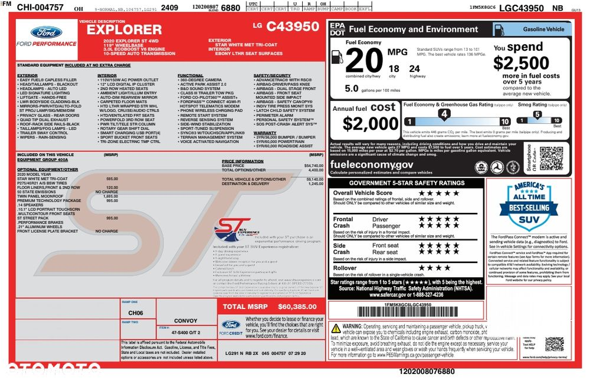

Poczuj różnicę za kierownicą Forda Explorer ST - 400 konna bestia z napędem 4x4, luksusowym wnętrzem i osiągami, które wyprzedzają oczekiwania. Komfort podróży i sportowa adrenalina w jednym , bez kompromisów. Taki właśnie jest mój fenomenalny samochód, który oferuję na sprzedaż.
Dane techniczne:
Rok produkcji: 11/ 2020
Przebieg: 66 975 km
Silnik: 3.0 V6 EcoBoost, 400 KM, 563 Nm
Napęd: AWD (4x4)
Skrzynia biegów: 10-biegowa automatyczna
Samochód sprowadzony przeze mnie na własny użytek z minimalną szkodą zderzaka przedniego i maski - naprawiony na oryginalnych częściach importowanych z USA.
Żadna z poduszek nie była wystrzelona - mówię tutaj o żadnej z poduszek czyli także o kurtynach bocznych i poduszkach pasów bezpieczeństwa. Szkoda w USA była wręcz parkingowa - czego dowodzi raport Carfax, i pełna dokumentacja zdjęciowa którą posiadam - ponad 100 zdjęć i nagrań wideo. Explorer nie miał usuniętej historii - można samodzielnie sprawdzić jego historię z USA wpisując VIN w Google.
Co jest bardzo ważne przy sprowadzonym aucie spoza Unii Europejskiej - Odprawa importowa ( cło, VAT ) została dokonana od prawdziwej kwoty zakupu w USA ! Posiadam do wglądu całą dokumentację. Oznacza to mniej więcej tyle że do moich drzwi czy nowego właściciela NIE zgłosi się NIGDY urząd po żadną dopłatę gdyż cała procedura importu została wykonana zgodnie z prawem i obowiązującymi przepisami skarbowymi.
Samochód jest w pełnej opcji wyposażenia - masujące fotele , wszystkie dostępne systemy bezpieczeństwa oraz ułatwiające poruszanie się tym pięknym autem.
Jest to model wyprodukowany przed pandemią czyli przed brakami kadrowymi i sprzętowymi - jak to miało miejsce w późniejszym czasie. W skutek czego fabryka nie cięła kosztów i załadowała do niego wszystko co było możliwe. Późniejsze roczniki to niestety wykastrowane egzemplarze z takich dodatków jak masujące fotele, podświetlone panele sterowania czy jednego mocowania tylnego mostu ( mój egzemplarz posiada dwa mocowania ).
Numer VIN z cyferką C wskazuje również że jest to model i rocznik, w którym praktycznie nie ma akcji serwisowych. Został on wyprodukowany w czasie najlepszym dla tego modelu. Osobiście usunąłem w nim bolączki które występują we wszystkich Explorerach tej generacji - dla pewnego pokonywania kolejnych kilometrów.
Pełne wyposażenie:
● Komfort i wnętrze
✔ Skórzana tapicerka z czerwonymi przeszyciami (ST)
✔ Fotele przednie sportowe, regulowane elektrycznie (10 kierunków)
✔ Podgrzewane i wentylowane fotele przednie
✔ Podgrzewane fotele tylne
✔ Trzeci rząd siedzeń – pełnowymiarowy
✔ Składane elektrycznie tylne fotele
✔ Elektrycznie regulowana kolumna kierownicy
✔ Skórzana, podgrzewana kierownica ST
✔ Oświetlenie ambientowe LED
✔ Dwustrefowa klimatyzacja automatyczna
✔ Rolety przeciwsłoneczne w tylnych drzwiach
● Multimedia i technologia:
✔ System multimedialny SYNC 3 z ekranem dotykowym 10,1" wraz z najnowszą aktualizacją do nawigacji na całym ekranie
✔ Apple CarPlay i Android Auto
✔ System nagłośnienia premium Bang & Olufsen (14 głośników + subwoofer)
✔ Wbudowana nawigacja GPS
✔ Ładowarka indukcyjna do telefonu
✔ Gniazda USB i USB-C z przodu i z tyłu
✔ Gniazdo 230V
✔ Moduł Wi-Fi (hotspot)
● Bezpieczeństwo i asystenci jazdy:
✔ Kamera 360° + czujniki parkowania przód/tył
✔ System kamer cofania z dynamicznymi liniami
✔ System monitorowania martwego pola (BLIS)
✔ Adaptacyjny tempomat z funkcją stop & go
✔ Asystent pasa ruchu (Lane Keeping Assist)
✔ Asystent jazdy w korku
✔ System zapobiegania kolizjom (Pre-Collision Assist)
✔ Automatyczne hamowanie awaryjne
✔ Rozpoznawanie znaków drogowych
✔ Asystent parkowania (automatyczne parkowanie równoległe i prostopadłe)
● Nadwozie i prowadzenie:
✔ Pakiet ST – agresywnie stylizowany przedni zderzak, dyfuzor, emblematy ST
✔ 21-calowe felgi aluminiowe ST
✔ Sportowe zawieszenie z adaptacyjnymi amortyzatorami
✔ Napęd AWD z trybami jazdy: Normal, Sport, Eco, Śnieg/Piasek, Błoto, Holowanie
✔ Sportowy układ wydechowy ST
✔ Elektrycznie sterowana klapa bagażnika z funkcją bezdotykową
✔ Dach panoramiczny z elektrycznym szyberdachem
✔ Przyciemniane tylne szyby
✔ Relingi dachowe
✔ Hak holowniczy – fabryczny, składany
● Stan i historia pojazdu:
✔ Samochód z pierwszą , minimalną szkodą w USA
✔ Serwisowany w ASO Forda
✔ Naprawiony na oryginalnych częściach importowanych z USA
✔ Gotowy do jazdy
Explorer ST jest po pełnym serwisie filtrowo-olejowym - silnika, skrzyni biegów, przedniego i tylnego mostu. Wymieniłem również płyn chłodzący i hamulcowy. Został oczywiście przystosowany do warunków europejskich. Jest to egzemplarz idealny, który nie posiada żadnych rys czy odprysków na lakierze. Cały proces sprowadzenia odbył się zgodnie z obowiązującymi przepisami. Jest to samochód bez żadnych niewiadomych - zarówno pod względem jego stanu fizycznego jak i prawnego. Z dostępną do wglądu historią serwisową, przebiegiem naprawy oraz procesu sprowadzenia do kraju. Śmiało mogę powiedzieć, że jedyny taki egzemplarz na sprzedaż w Polsce. Zachwyci pierwszego klienta, który na 100% odjedzie nim do nowego domu.
Explorer wyjeżdża ode mnie z pełnym bakiem benzyny 98 - gdyż tylko taką tankuję.
Cena: 179 900 zł
Kontakt:
Zapraszam do kontaktu i na jazdę próbną!

 
